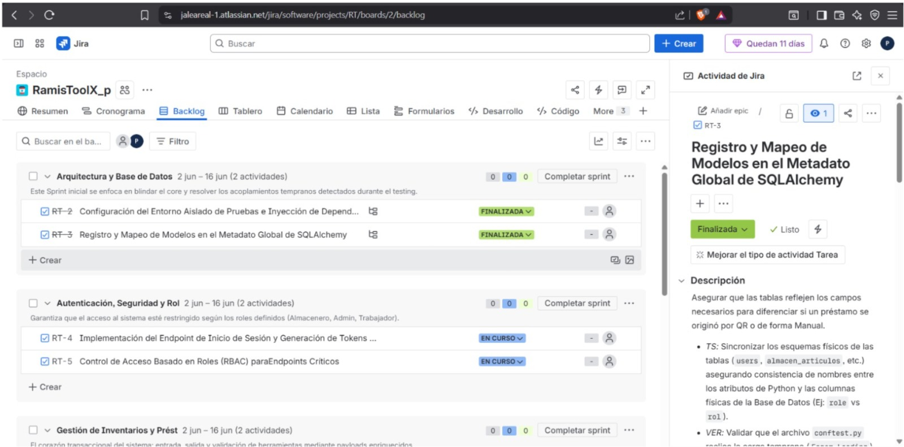
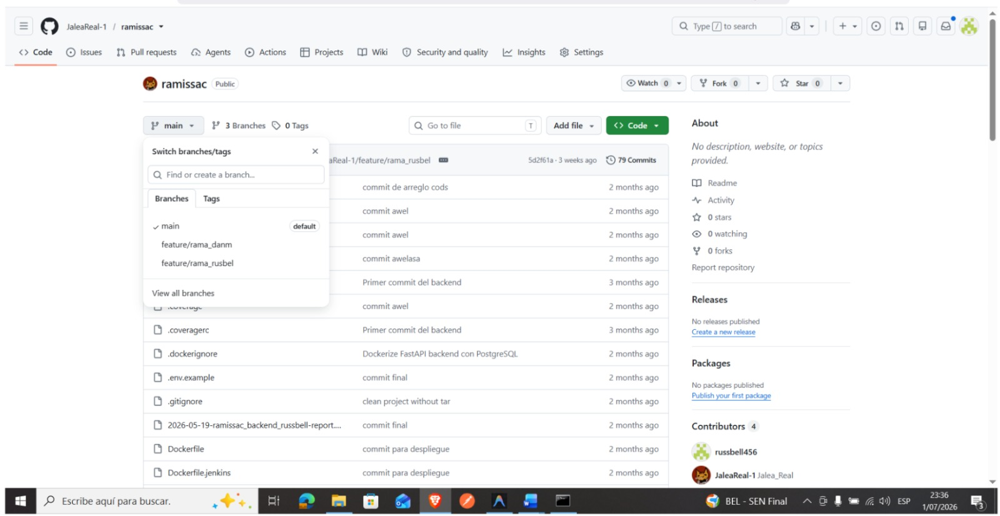
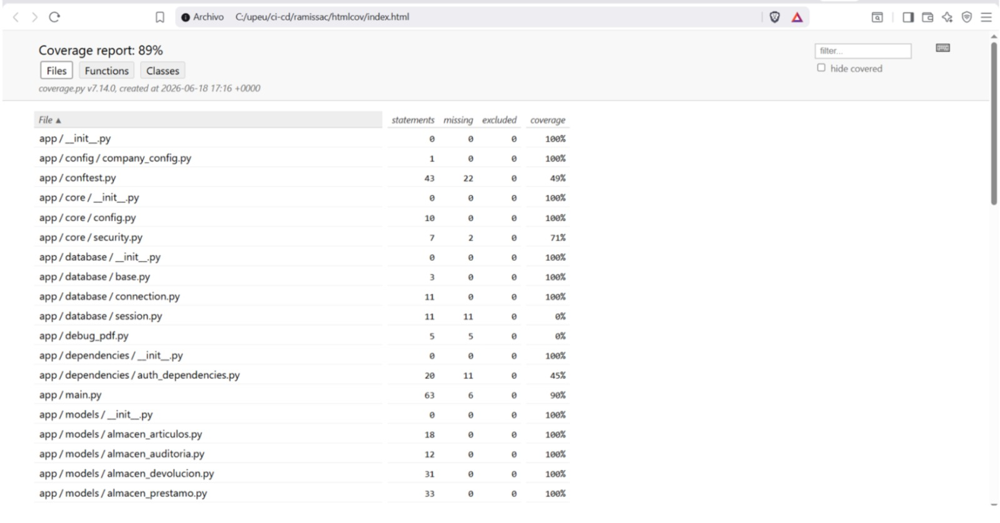
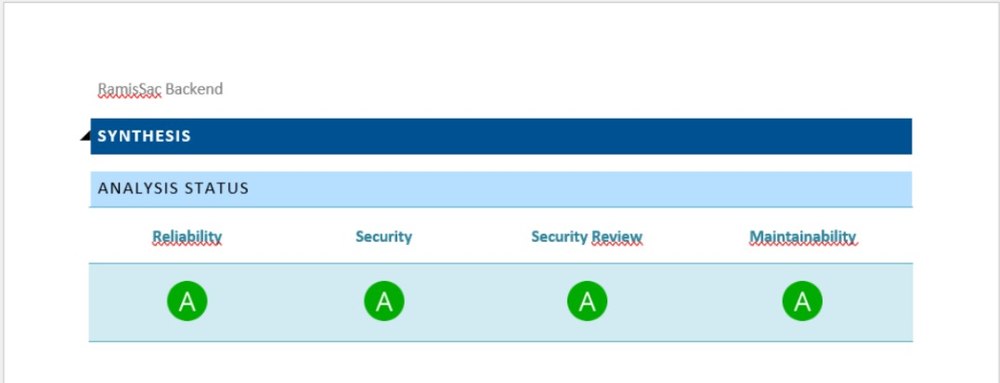
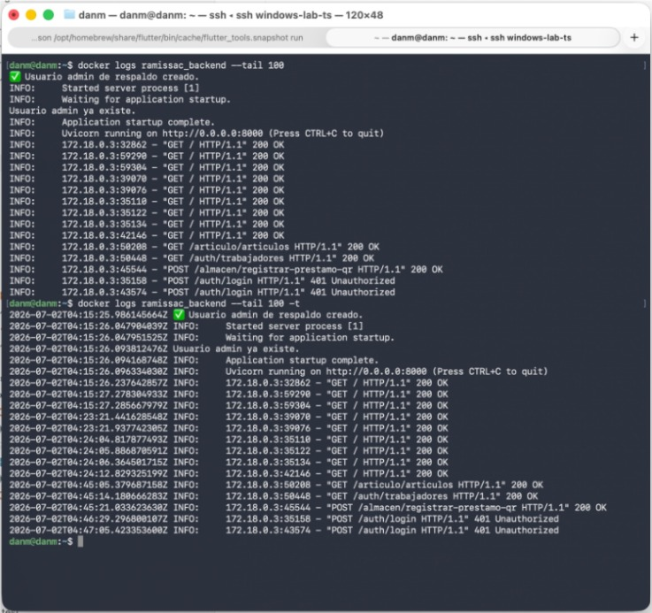
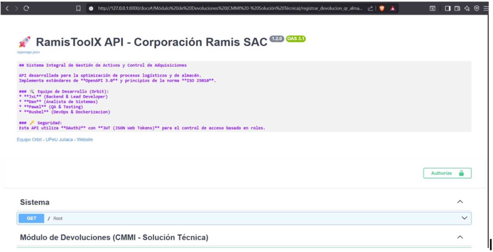

Entregable N° 4: Registro de Evidencias de Auditoría (Fase 2)
SISTEMA: RamisToolX
ORGANIZACIÓN: Startup Orbit
CÓDIGO DEL DOCUMENTO: AUD-SDLC-RAMISTOOLX-2026-004-EVID
FECHA DE RECOPILACIÓN: 15 de julio al 08 de agosto de 2026
1. INTRODUCCIÓN Y METODOLOGÍA DE RECOPILACIÓN
Este documento compila de manera sistemática los artefactos, reportes y comprobaciones técnicas obtenidas durante la Fase 2 (Ejecución) de la auditoría del Ciclo de Vida de Desarrollo de Software (SDLC) de RamisToolX. Las evidencias han sido clasificadas y codificadas según las áreas de evaluación: Gestión de Requisitos (Jira/GitHub), Calidad de Código (SonarCloud), Seguridad (Snyk) e Infraestructura de Despliegue (Servidor Privado).
2. COMPILACIÓN SISTEMÁTICA DE EVIDENCIAS
EVIDENCIA A: Trazabilidad de Requisitos y Gestión de Sprints (Jira y GitHub)
- Código de Evidencia: EVID-REQ-001
- Área Evaluada: Gestión de Requisitos (Metodología Scrum / CMMI-DEV v1.3)
- Descripción: Verificación del estado "Done" en las Historias de Usuario dentro del tablero Jira de la Startup Orbit, constatando la definición de criterios de aceptación y su vinculación con los Pull Requests correspondientes en GitHub.
CAPTURA DE PANTALLA N° 01: Tablero Scrum de Jira mostrando el Sprint finalizado.

Análisis del Auditor (Reginaldo Dan Mayhuire): Se constata una trazabilidad directa entre la planificación de requerimientos y las ramas de desarrollo. Las políticas de Git Flow exigen un identificador de Jira en cada commit.
EVIDENCIA B: Cumplimiento de Políticas de Revisión por Pares (Peer Review)
- Código de Evidencia: EVID-QA-002
- Área Evaluada: Verificación (CMMI-DEV VER)
- Descripción: Inspección de la configuración de ramas en GitHub, comprobando la restricción activa que impide fusiones directas a la rama principal (
mainomaster) sin la aprobación de al menos dos revisores técnicos del equipo (Russbel, Pawel o Dan).
CAPTURA DE PANTALLA N° 03: Pull Request en GitHub donde se observen las firmas digitales de aprobación de los miembros asignados a la revisión por pares antes del Merge.

EVIDENCIA C: Análisis Estático de Calidad y Mantenibilidad (SonarCloud .jar)
- Código de Evidencia: EVID-QUAL-003
- Área Evaluada: Verificación de Código y Deuda Técnica
- Descripción: Capturas de los documentos de texto (Word) y hojas de cálculo (Excel) extraídos mediante el componente ejecutable
.jarde SonarCloud. Se evidencia el cumplimiento del 89% de cobertura de código (Code Coverage) logrado a través de las pruebas automatizadas con Pytest, así como las métricas de mantenibilidad y confiabilidad ("Rating A").
CAPTURA DE PANTALLA N° 04: Reporte consolidado en Excel exportado de SonarCloud mostrando la métrica oficial de 89% de Code Coverage.

CAPTURA DE PANTALLA N° 05: Documento Word extraído del .jar donde se listen los índices de Deuda Técnica, Code Smells y el estado de los Quality Gates en 'Passed'.

Análisis del Auditor (Pawel Armando Paricahua): Los datos demuestran un incremento robusto en la calidad frente a iteraciones anteriores. El 89% cubre los módulos críticos de negocio de FastAPI y las vistas en Flutter.
EVIDENCIA D: Análisis de Seguridad de Dependencias (Snyk JSON)
- Código de Evidencia: EVID-SEC-004
- Área Evaluada: Seguridad de Software y Mitigación de Riesgos
- Descripción: Inspección técnica del archivo estructurado en formato JSON exportado por la herramienta Snyk durante el escaneo automatizado del backend de la aplicación. Se analiza la identificación y nivel de severidad de vulnerabilidades en las librerías de Python.
CAPTURA DE PANTALLA N° 06: Fragmento del archivo JSON de Snyk abierto en un editor de código (VS Code), resaltando las claves severity, title y el estado de remediación de paquetes de FastAPI.

EVIDENCIA E: Entorno de Producción y Configuración en Servidor Privado
- Código de Evidencia: EVID-INF-005
- Área Evaluada: Solución Técnica e Integración del Producto (CMMI-DEV TS / IP)
- Descripción: Verificación del correcto despliegue del sistema RamisToolX en el Servidor Privado de la organización. Se audita la inicialización del servicio de FastAPI mediante Uvicorn, las variables de entorno aisladas y la persistencia en base de datos.
CAPTURA DE PANTALLA N° 07: Consola SSH conectada al Servidor Privado mostrando la ejecución exitosa del backend en FastAPI y los logs de atención de peticiones en tiempo real.

EVIDENCIA F: Persistencia de Actas PDF y Carga Masiva
- Código de Evidencia: EVID-STG-006
- Área Evaluada: Procesamiento de Datos y Almacenamiento Seguro
- Descripción: Comprobación del guardado físico de las actas de préstamo generadas en formato PDF dentro de los directorios absolutos del Servidor Privado y pruebas de ejecución del script de procesamiento para la carga masiva de inventarios a través de archivos Excel.
CAPTURA DE PANTALLA N° 08: Estructura de directorios en el servidor privado mediante SFTP / Terminal, listando los archivos PDF de las actas generadas.

CAPTURA DE PANTALLA N° 09: Interfaz interactiva de Swagger/OpenAPI o log del sistema confirmando la carga exitosa y procesamiento sin errores.

Análisis del Auditor (Russbel Daniel Cari): La transición al Servidor Privado resolvió las limitaciones de almacenamiento y rutas relativas. Las actas PDF se guardan con codificación de seguridad y la lógica de carga masiva en Excel valida excepciones de tipos de datos de forma correcta.
3. CONCLUSIÓN DEL REGISTRO
Las evidencias presentadas certifican que el equipo Startup Orbit ha ejecutado las actividades de ingeniería de acuerdo con los estándares establecidos. El descarte del entorno Termux por el Servidor Privado dota al sistema de mayor estabilidad y viabilidad técnica para la Corporación Ramis SAC.
Firmas del Equipo Auditor:
Russbel Daniel Cari Mamani Auditor de Infraestructura y Despliegue
Pawel Armando Paricahua Adco Auditor de Calidad y QA
Reginaldo Dan Mayhuire Buendia Auditor de Gestión y Seguridad